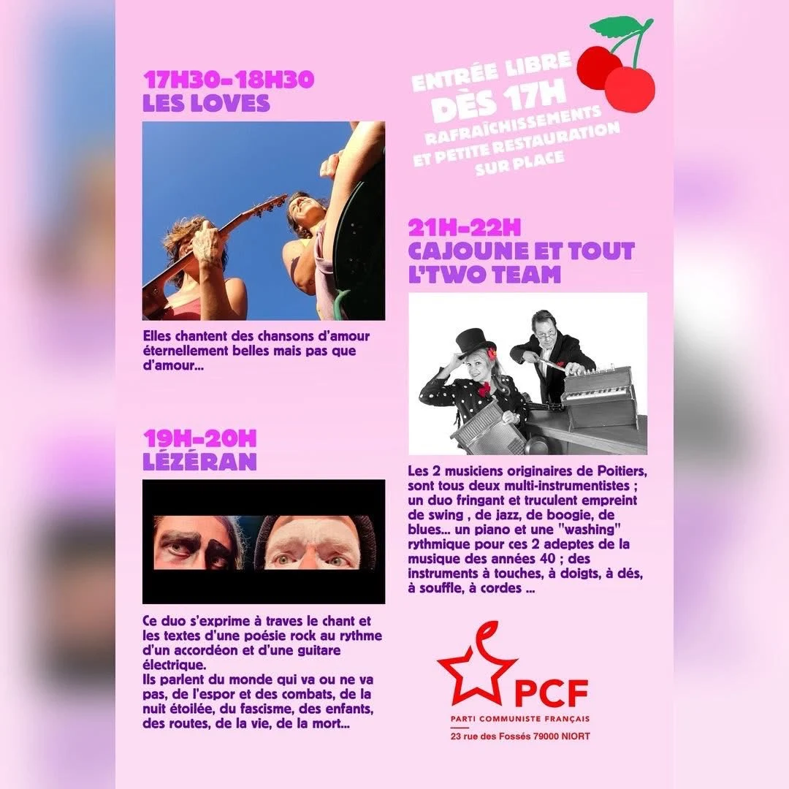
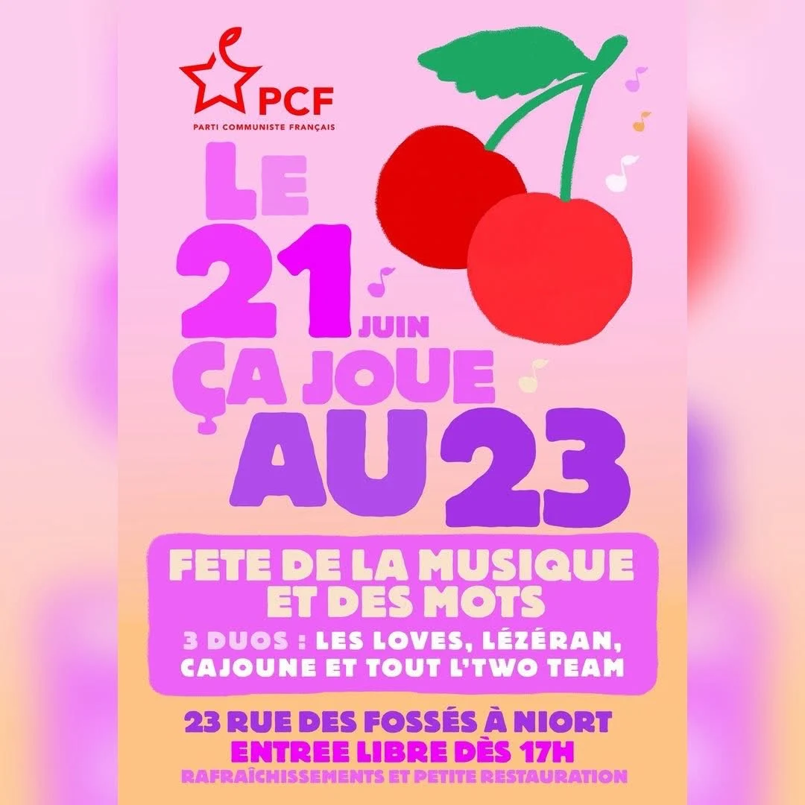

Publication sur X
À Niort, l’annonce de notre Fête de la musique et des mots
Date de publication sur X · 5 juin 2026
Repères éditoriaux
Nous avions prévu une deuxième édition au 23 rue des Fossés le 21 juin. La canicule nous a conduits à annuler la fête. Les affiches conservent le programme prévu.
Texte de la publication sur X
Venez fêter la musique et le début de l’été, pour la 2ème édition de la fête de la musique du PCF79. De la musique, des mots, des artistes, des victuailles et des boissons, venez vibrer au 23 rue des fossés ! #fetedelamusique #21juin #pcf #niort #deuxsèvres https://t.co/ZvkDKLeOgX


Sources
PCF 79 · @79Parti sur X · AR-0005-TW-2063000891460821057
À lire aussi · Bonne année 2026 de la part du PCF des Deux-Sèvres
Publications associées
- À Niort, l’annonce de notre Fête de la musique et des mots du 21 juin · Annonce sur Facebook
- Canicule. Notre Fête de la musique du 21 juin est annulée · Annulation du 20 juin